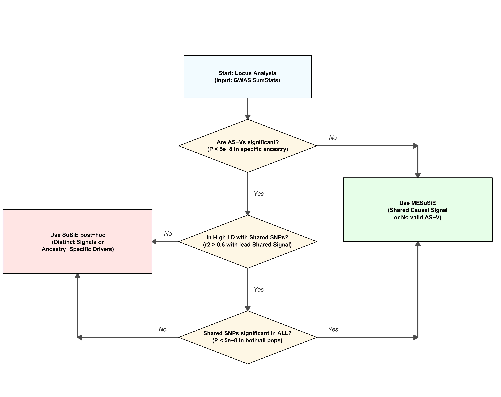

Last updated: 2026-08-25
Checks: 2 0
Knit directory: MF_benchmarking_MFD/
This reproducible R Markdown analysis was created with workflowr (version 1.7.2). The Checks tab describes the reproducibility checks that were applied when the results were created. The Past versions tab lists the development history.
Great! Since the R Markdown file has been committed to the Git repository, you know the exact version of the code that produced these results.
Great! You are using Git for version control. Tracking code development and connecting the code version to the results is critical for reproducibility.
The results in this page were generated with repository version d4b3e61. See the Past versions tab to see a history of the changes made to the R Markdown and HTML files.
Note that you need to be careful to ensure that all relevant files for
the analysis have been committed to Git prior to generating the results
(you can use wflow_publish or
wflow_git_commit). workflowr only checks the R Markdown
file, but you know if there are other scripts or data files that it
depends on. Below is the status of the Git repository when the results
were generated:
Ignored files:
Ignored: analysis/MFD_flowchart.png
Note that any generated files, e.g. HTML, png, CSS, etc., are not included in this status report because it is ok for generated content to have uncommitted changes.
These are the previous versions of the repository in which changes were
made to the R Markdown (analysis/index.Rmd) and HTML
(docs/index.html) files. If you’ve configured a remote Git
repository (see ?wflow_git_remote), click on the hyperlinks
in the table below to view the files as they were in that past version.
| File | Version | Author | Date | Message |
|---|---|---|---|---|
| Rmd | d4b3e61 | Guangxin Chen | 2026-08-25 | Remove redundant low-LD label |
| html | ae98c57 | Guangxin Chen | 2026-08-25 | Restore LD plots and refresh site provenance |
| Rmd | c67888a | Guangxin Chen | 2026-08-24 | Refresh MFD website documentation |
| html | c67888a | Guangxin Chen | 2026-08-24 | Refresh MFD website documentation |
| html | 4c5e914 | Guangxin Chen | 2026-08-24 | Build clarified MFD website pages |
| Rmd | 3c26b5e | Guangxin Chen | 2026-08-24 | Clarify cross-ancestry terminology and K inputs |
| html | 56b23d2 | Guangxin Chen | 2026-08-24 | Build K-ancestry website pages |
| Rmd | 85922a0 | Guangxin Chen | 2026-08-24 | Document K-ancestry website usage |
| html | 1f9faf2 | Guangxin Chen | 2026-05-04 | Build site. |
| html | e4d0c21 | Guangxin Chen | 2026-05-04 | Build site. |
| html | fd83472 | Guangxin Chen | 2026-05-04 | Build site. |
| html | 391df5a | Guangxin Chen | 2026-05-04 | Build site. |
| html | 3503492 | Guangxin Chen | 2026-05-04 | Build site. |
| Rmd | 2a1d77f | Guangxin Chen | 2026-05-04 | Rewrite index page for general audience |
| html | 246de03 | Guangxin Chen | 2026-05-04 | Build site. |
| Rmd | c53709a | Guangxin Chen | 2026-05-04 | Rewrite index page for general audience |
| html | 6f1314c | Guangxin Chen | 2026-05-04 | Build site. |
| Rmd | 8c37854 | Guangxin Chen | 2026-05-04 | Rewrite index page for general audience |
| html | 6302d0c | Guangxin Chen | 2026-05-04 | Build site. |
| html | 7fb5cf7 | Guangxin Chen | 2026-05-04 | Build site. |
| html | f89d202 | Guangxin Chen | 2026-05-04 | Build site. |
| html | ad671ce | Guangxin Chen | 2026-05-04 | Build site. |
| html | 5050c6d | Guangxin Chen | 2026-02-13 | Build site. |
| Rmd | 3f3ec0d | Guangxin Chen | 2026-02-13 | Refine DBP real data examples |
| html | 86226ef | Guangxin Chen | 2026-02-13 | Build site. |
| html | 6163f84 | Guangxin Chen | 2026-02-11 | Build site. |
| html | 33e49c0 | Guangxin Chen | 2026-02-11 | Build site. |
| Rmd | ad065c6 | Guangxin Chen | 2026-02-11 | Refine DBP real data examples |
| html | 596adfe | Guangxin Chen | 2026-02-11 | Build site. |
| Rmd | e582f0f | Guangxin Chen | 2026-02-11 | Refine DBP real data examples |
| Rmd | dc4ce8e | Guangxin Chen | 2026-02-10 | Start workflowr project. |
When a genome-wide association study (GWAS) identifies a genomic region associated with a trait, it typically flags many nearby variants that are correlated with each other due to linkage disequilibrium (LD), which is the tendency of nearby DNA variants to be inherited together. Fine-mapping is the statistical step that goes further and asks: which specific variant(s) in this region are most likely to be truly causal?
Studying multiple ancestries simultaneously helps fine-mapping in two ways:

MFD automatically decides the best multi-ancestry fine-mapping strategy for each genomic region based on the genetic architecture of that locus. It chooses between two approaches:
Joint modeling (MESuSiE path): When the causal variant is likely a cross-ancestry variant, MFD analyzes all ancestries together. This borrows statistical strength across populations and uses differences in LD to sharpen the signal.
Post-hoc integration (SuSiE post-hoc path): When a variant is only present in one ancestry group, joint modeling would miss it (since only variants common to all groups can be jointly analyzed). MFD instead runs fine-mapping separately within each ancestry, then combines the results using a consensus measure of LD across populations.
MFD applies a simple three-step logic to choose the right approach for each locus:
Some variants are present in one or a subset of ancestry groups but absent from at least one other group. If such a variant reaches genome-wide significance (\(P < 5 \times 10^{-8}\)) in an ancestry where it is present, MFD flags it as an ancestry-specific variant (AS-V).
If AS-Vs are present, MFD checks whether they are correlated with the main cross-ancestry signal using \(r^2\) (a measure of LD, ranging from 0 = no correlation to 1 = perfect correlation).
If the AS-V is highly correlated with the cross-ancestry signal (\(r^2 \geq 0.6\)), MFD checks whether the cross-ancestry signal is genome-wide significant in every ancestry:
Note: Our software is intended strictly for research purposes. We firmly stand against any form of racial discrimination and advocate for the ethical use of MFD.